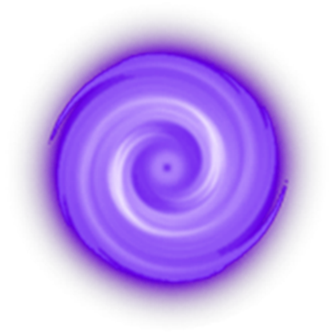
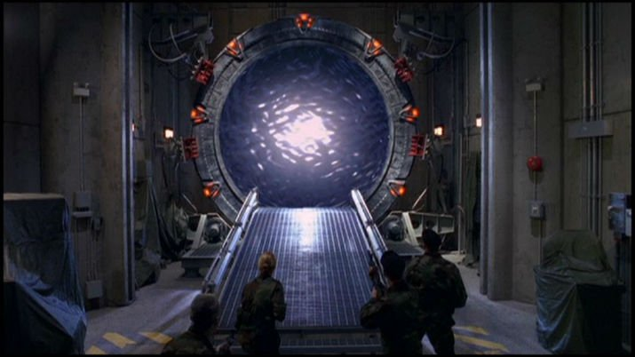
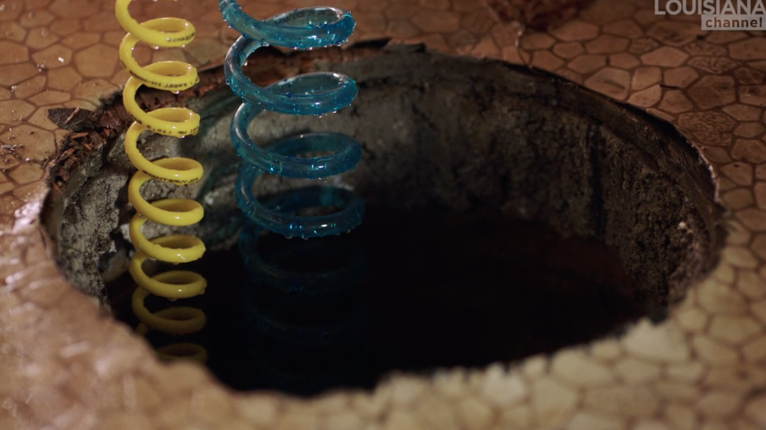
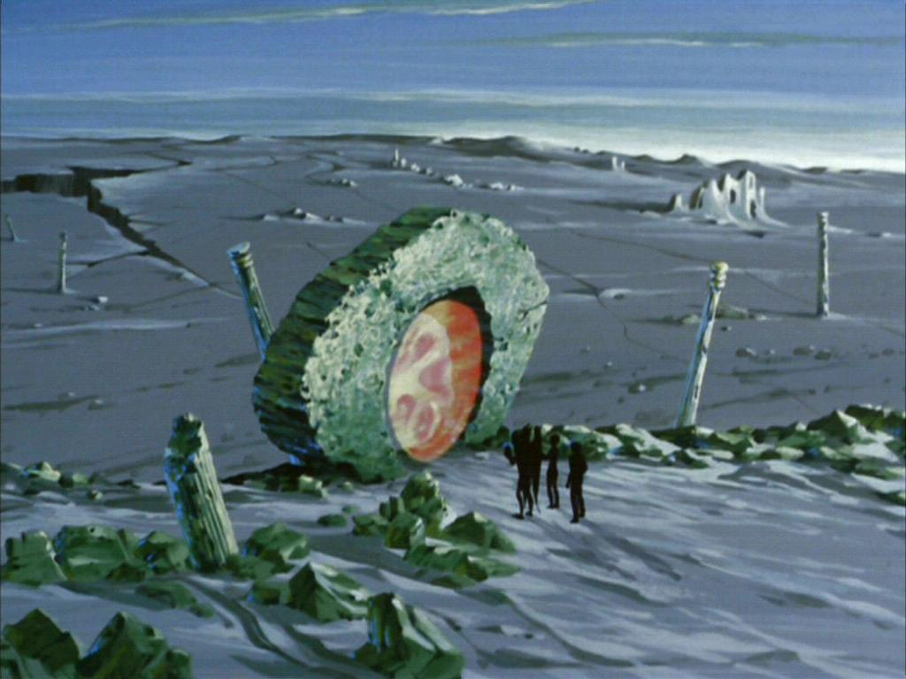
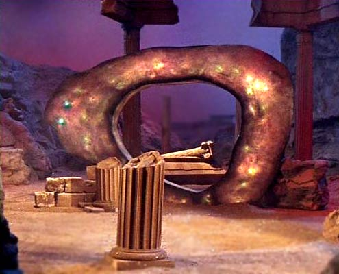
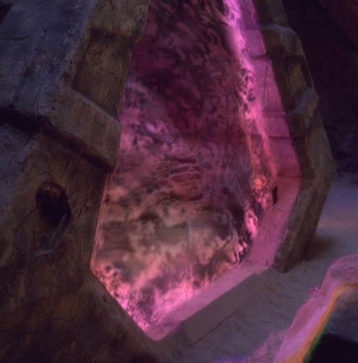
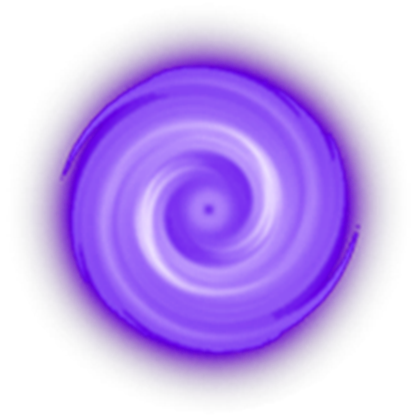
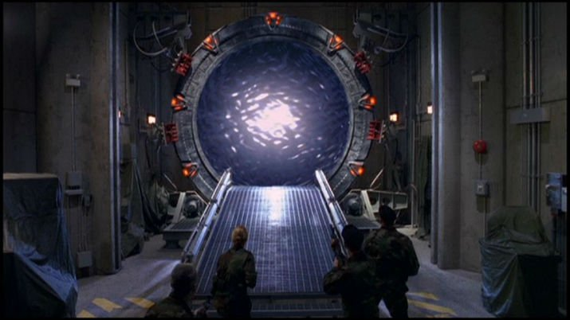
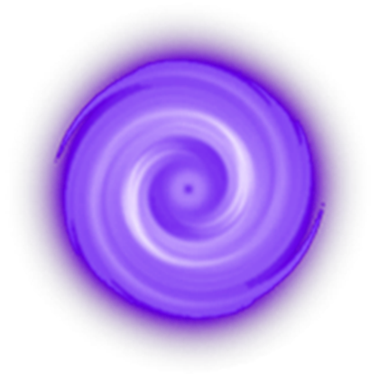
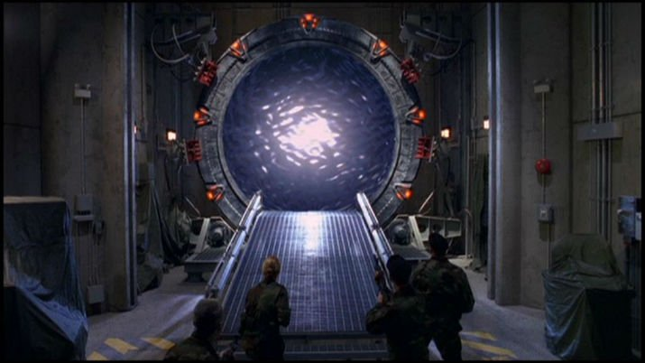

Wikipedia states that:' Places linked by a portal include a different spot in the same universe (in which case it might be an alternative for teleportation); a parallel world (inter-dimensional portal); the past or the future (time portal); and other planes of existence, such as heaven, hell or other afterworlds. A parallel world, such as C. S. Lewis's Wood between the Worlds in his Chronicles of Narnia, may exist solely to contain multiple portals, perhaps to every parallel world in existence.'


 Prtl.1 Mika Rottenberg - Cosmic Generator
 Prtl.2 Time Vortex
 Prtl.3 Guardian_of_Forever
 Prtl.4 Golana time portal
In this case the portal page behaves like a gateway to different sources and stories. Every page excists parralel to the other, which makes them as important as every other page.

 


